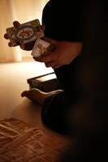

Tema Natale
Un incontro per esplorare la tua carta di nascita: il segno solare è solo una piccola parte di un linguaggio più ampio.
- Lettura individuale online
- Registrazione dell’incontro
- PDF con mappa planetaria
150 €PRENOTA
Ogni percorso parte da ciò che desideri osservare. Puoi iniziare dalla lettura della tua carta natale oppure approfondire un tema con Tarocchi, Transiti, Roadmap e Sinastria.
Immagine Tema Natale: foto di repertorio di Pavel Danilyuk / Pexels. Fotografia Tarocchi: AstroSonico.
Gli incontri si svolgono online con Francesca. Per Tema Natale, Tarocchi, Transiti e Sinastria puoi scegliere giorno e ora dal calendario del servizio. Per il Percorso annuale compila una richiesta senza scegliere la data. Francesca risponderà via email con i dettagli per il bonifico e la conferma.
Un incontro per esplorare la tua carta di nascita: il segno solare è solo una piccola parte di un linguaggio più ampio.

Le immagini del Tarocco come specchio del presente: una sessione per mettere a fuoco una scelta, una relazione o un passaggio.
Una lettura dei transiti dei prossimi tre mesi, per osservare le tematiche che si attivano e affrontarle con maggiore consapevolezza.
Quattro incontri durante l'anno per osservare in anticipo i tuoi transiti personali e i temi che emergono.
Una lettura incrociata di due Temi Natali per esplorare punti di incontro, tensioni e dinamiche della relazione, anche non sentimentale.
Leggi le descrizioni oppure scrivi a Francesca per capire quale servizio sia più coerente con la tua domanda.
Per Tema Natale, Tarocchi, Transiti e Sinastria scegli giorno e orario su Cal.com. Per il Percorso annuale compila il modulo senza calendario. Francesca ti risponderà con le indicazioni per il bonifico; il percorso verrà confermato dopo il pagamento.
La sessione si svolge in videochiamata. Quando previsto, riceverai la registrazione e il materiale di accompagnamento.
L'ora di nascita è importante per determinare ascendente e case astrologiche. Prima di prenotare, prova a recuperarla attraverso documenti anagrafici o familiari; se non la trovi, scrivi a Francesca per valutare il caso.
Sì. I Transiti e la Percorso annuale sono descritti come approfondimenti successivi alla lettura del Tema Natale effettuata con Francesca.
Sì. L'incontro può svolgersi con una sola persona presente, pur analizzando due carte natali, con il rispetto e il consenso necessari all'utilizzo dei dati di nascita.
La lettura del Tema Natale, quella dei Transiti e la Sinastria prevedono la registrazione secondo le descrizioni dei servizi. Il Tema Natale comprende anche un PDF con la mappa planetaria.
Le richieste inviate dal calendario Cal.com e dal modulo del Percorso annuale non costituiscono una prenotazione confermata. Francesca invierà via email le informazioni per il bonifico e la conferma avverrà dopo la verifica del pagamento.